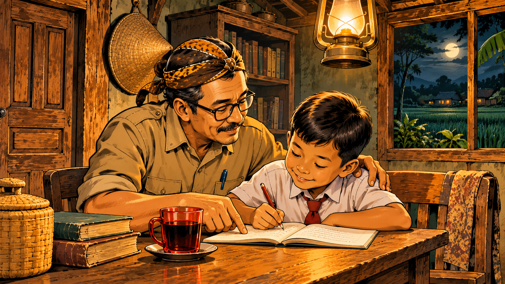

Cerita utama
Selama Mata Masih Melihat, Tangan Masih Bisa Bekerja, dan Kaki Masih Mampu Melangkah
Waktu bersama bapak hanya sampai awal kelas dua SD. Tetapi kehadirannya mengajarkan lebih banyak daripada yang bisa dijelaskan oleh waktu.
Baca kisah lengkap →